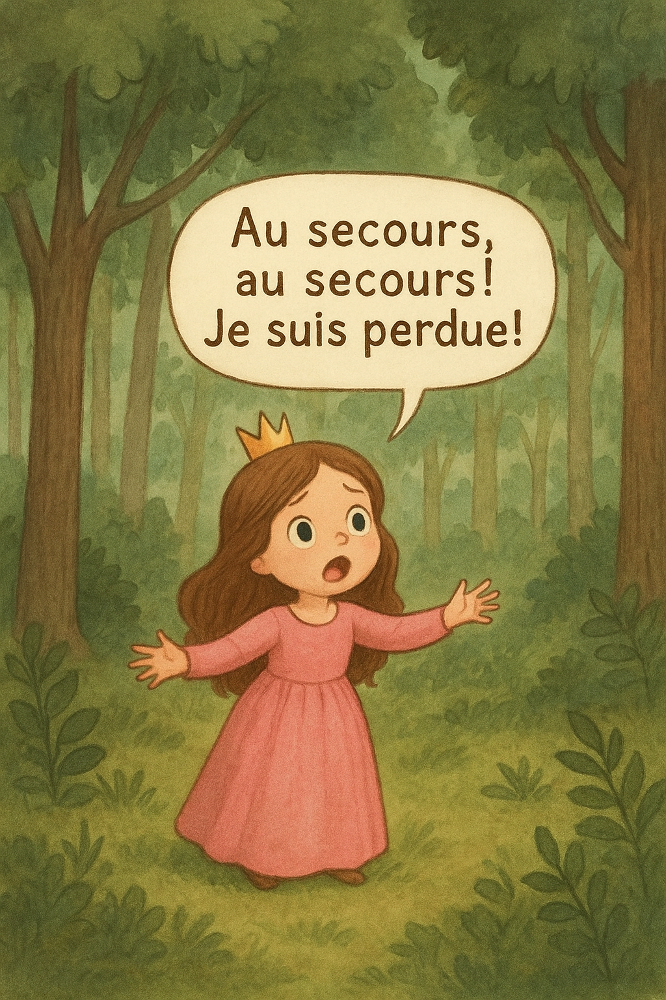

Il était une fois une petite princesse qui s’était égarée dans la grande forêt.
— « Au secours, au secours ! Je suis perdue ! »

Il était une fois une petite princesse qui s’était égarée dans la grande forêt.
— « Au secours, au secours ! Je suis perdue ! »
Tout à coup, une biche aux yeux doux apparut.
— « Bonjour, gente demoiselle. Vous êtes perdue ? »
— « Oh, bonjour Madame la Biche. Oui, je suis perdue. Je suis la princesse du château très, très lointain. Pourriez-vous m’indiquer le chemin ? »
— « Une princesse ! Enchantée ! Le château est par là-bas… mais attention, c’est très, très loin ! »
— « Merci beaucoup, Madame la Biche ! Au revoir ! »
Elle se remit en marche. Elle marcha, marcha… mais bientôt, les arbres l’entouraient de toutes parts et elle ne voyait plus rien. Alors, elle cria encore :
— « Au secours, au secours ! Je suis perdue ! »
Un hibou, perché sur une branche, l’entendit et descendit en voletant.
— « Bonjour Princesse ! Que faites-vous ici ? »
— « Oh, vous me connaissez ? Je voudrais rentrer au château, mais je suis perdue… »
— « Non, je ne vous connais pas. Mais à votre belle robe, j’ai deviné que vous êtes une princesse ! Le château est par là-bas… mais attention, c’est très, très loin ! »
— « Merci, Monsieur le Hibou ! Au revoir ! »
Et la princesse reprit son chemin. Elle marcha, marcha encore, mais la forêt semblait sans fin. Alors, elle s’écria une troisième fois :
— « Au secours, au secours ! Je suis perdue ! »
Cette fois, un cheval majestueux arriva en trottant.
— « Princesse ! »
— « Maximilien ! Quelle joie de te retrouver ! »
Alors, Maximilien la prit sur son dos et la ramena au château. Là, le roi et la reine l’attendaient avec impatience.
— « Papa ! Maman ! »
— « Notre princesse ! »
Ils la serrèrent dans leurs bras, soulagés et heureux de la retrouver. Et ce fut un très beau câlin…